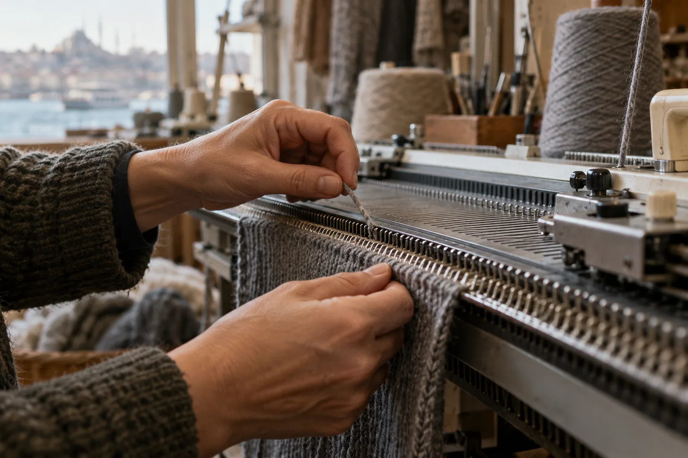
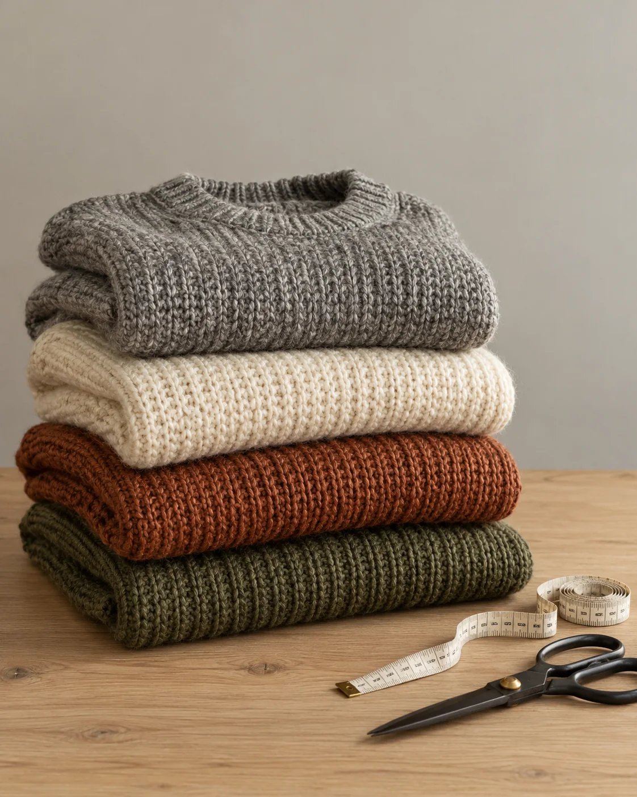
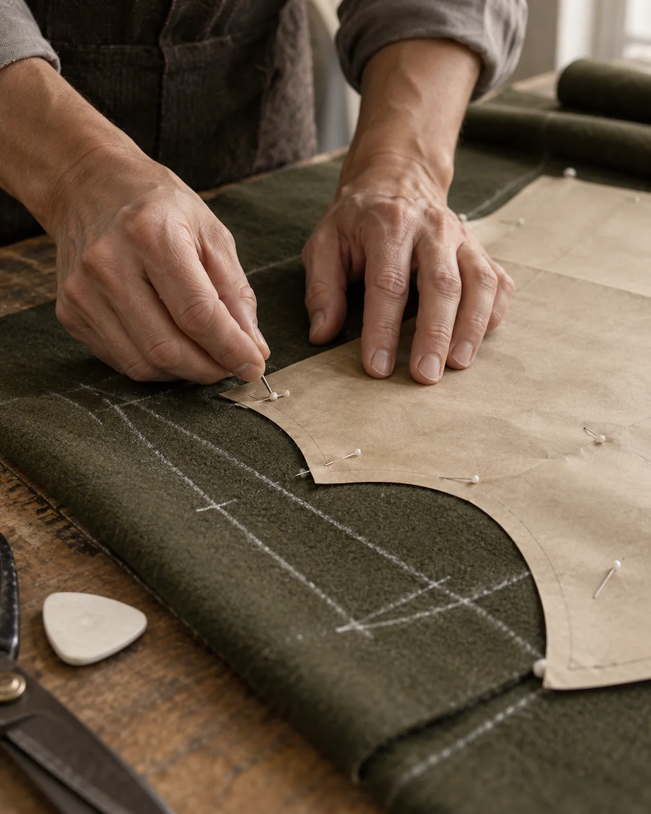

Hikâye
Soğuk bir şehiriçin kıyafet.

Neden AYAZ
İstanbul’un kışı ıslak, rüzgârlı ve uzun. AYAZ bu kış için kuruldu: her sabah aynı kalın kazağı, aynı geniş pantolonu, aynı paltoyu giyen insanlar için. Az parça yapıyoruz ama her birini yıllarca giyilecek kalınlıkta yapıyoruz.
Her drop, birbiriyle giyilmek üzere düşünülmüş birkaç kombinden oluşur. Kumaşı biz seçeriz, kalıbı biz çizeriz, dikimi İstanbul’daki atölyelerle birlikte yaparız.


Az ama kalın.
Bir drop’ta 14 parça. Her biri ağır yün, kalın örgü ya da sık dokulu pamuk.
Yerinde üretim.
Örgüler Denizli’de, paltolar ve pantolonlar İstanbul’da. Atölyeleri tek tek tanıyoruz.
Uzun ömür.
Söküğü, düşen düğmeyi, kaçan ilmeği ilk iki yıl ücretsiz onarıyoruz.
Drop 02raflarda.
Yedi kombin, on dört parça. Tükenen bedenler yeniden üretilmeyebilir.
Mağazaya gir